Black SFF PC Power Supply Replacement Procedure
This document provides instructions for removing and installing a Black SFF PC power supply.
1. Remove 4 chassis screws.
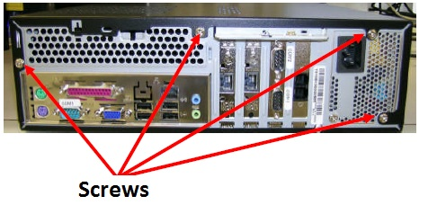
2. After removing the Chassis cover Lightly lift the front bezel tabs over the edge of the chassis to remove the bezel by carefully pulling forward.
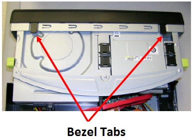
3. After the front bezel is removed slide the two green drive cage locking tabs forward releasing the drive cage.
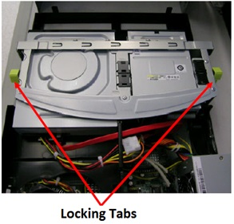
4. Separate drive cage assembly from chassis.
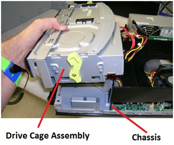
5. Remove optical drive power cable.
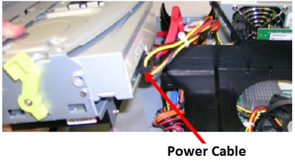
6. Remove the Floppy drive power cable, the Hard Drive Power Cable and the black airflow baffle. Free cable from drive cage assembly in preparation for supply removal.
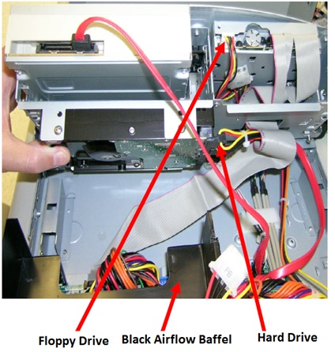
7. Disconnect the 24pin Motherboard power connector and the 4 pin CPU Power connector.
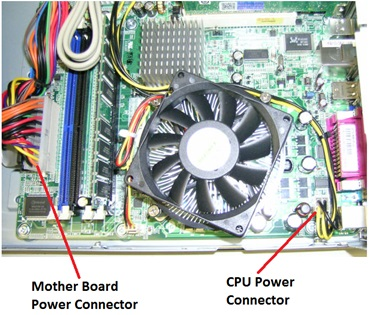
8. Slide the fan bracket towards the front of the chassis and remove.
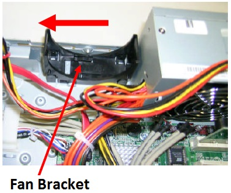
9. Remove the remaining power supply screw from the back of the chassis.
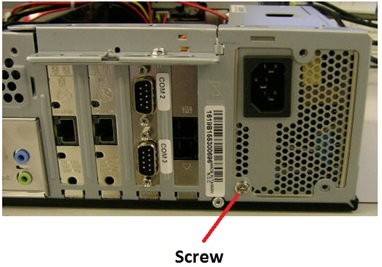
10. Lift the back of the power supply and remove from the chassis.
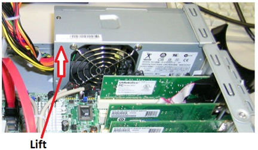
11. Install the new supply by guiding in place infront of chassis hold down tab.
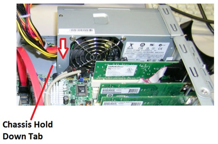
12. Install the power supply chassis screw in place after new supply is installed. Ensure chassis holes line up with the power supply threaded holes before tightening the power supply chassis screw.
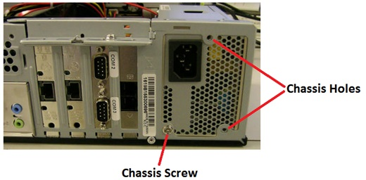
13. Slide the fan bracket towards the rear of the chassis.
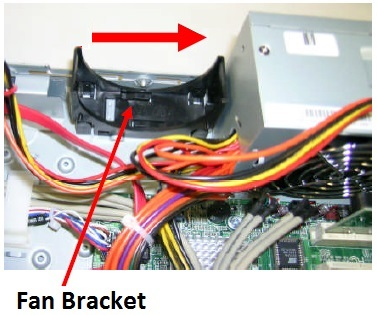
14. Guide 4 position CPU power connector between the bridge heatsink and CPU Fan assembly.
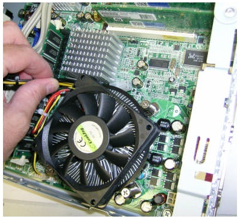
15. Connect the 24 pin Motherboard power connector and the 4 pin CPU Power connector.
16. Place the black plastic airflow baffle back inplace.
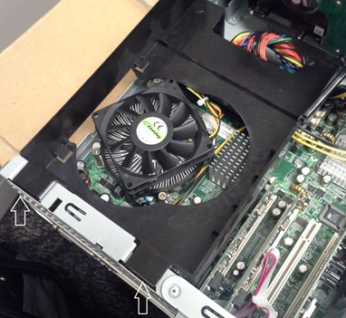
17. Connect the Floppy drive power cable and Hard Drive Power Cable.
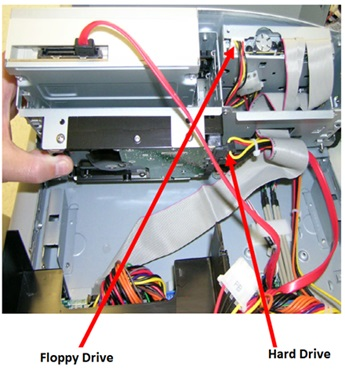
18. Connect optical drive power cable.
19. Place Drive bay assembly back in place and put cable clamp in place as shown with unused 4 position power connector to outside of the fan tray as shown
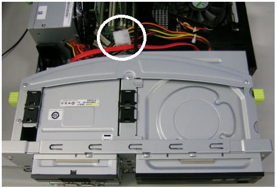
20. Verify that the EMI Gasket between the drive bay and USB connector assembly is in place is shown.
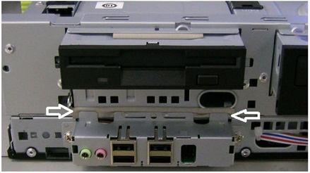
21. Verify that wires have not been trapped between the drive bay assembly and the chassis. Then lock the drive bay in place with the green slides.
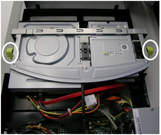
22. Snap front Bezel back in place. Verify that the plastic clips lock in place over the chassis and that both side surfaces are flush with the chassis.
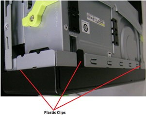
23. Install the chassis cover and tighten the 4 Chassis Screws.